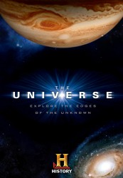

")
Alternativ: The Universe
 
 IMDB-Wertung: 8.9 / 10
IMDB-Wertung: 8.9 / 10  Metascore:
Metascore: 
Am Anfang von allem, hier beginnt unsere Geschichte! Es gibt mehr als 50 Millarden Milchstaßen im all, 95% sind noch vollkommen unerforscht! Diese Serie untersucht die Mysterien des Weltalls! Von Schwarzen Löchern bis zur Funktion unserer Sonne. Ist unser Planet im Weltall ebenso unbedeutend, wie der Fall eines Wassertropfen ins Meer. History Channel untersucht die unerforschten Grenzen des Raums und die mögliche Existenz lebensfreundlicher Welten in den weiten des Alls.
Jahr: 2007
Dauer: 89 Minuten
FSK:
Land: USA Studio: History ChannelTonspuren: DD5.1 - ,
Untertitel:
Auflösung: 720p (1280x720) Größe: 2805 MB
Genre: Dokumentation, Geschichte, TV-Serie
Regisseur: Laura Verklan, Louis Tarantino, Darryl Rehr, Douglas Cohen, Robert Beemer, Colin Campbell, Jim Hense, James Grant Goldin, Tony Long, Arthur Drooker, Andy Papadopoulos, Kevin Barry, Amy Huggins, Andrew Nock, Luke Ellis, Annie Azzariti, Savas Georgalis, John Greenewald Jr., Bob Melisso, Tim Evans
Drehbuch: Andrew Cosby
Soundtrack:
Darsteller:
Datei: X:\Dokumentationen\Weltraum\Geheimnisse des Universums\S01\Unser Universum S01 E00 Der Urknall die Entstehung des Universums.mkv seit 07.08.2017
Festplatte: HD Serien(SU-Z)+Dokus+Musik
 Es gibt insgesamt 22 Filme in der Gruppe 'Dokumentationen\Weltraum'
Es gibt insgesamt 22 Filme in der Gruppe 'Dokumentationen\Weltraum'